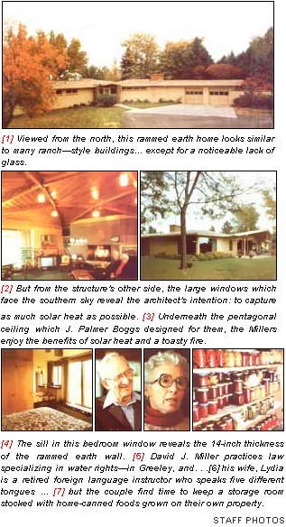
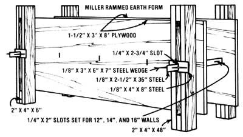
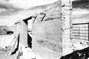

David and Lydia Miller have built five rammed earth homes since 1945, and they plan to spend the rest of their lives...
In an era which tends to celebrate the new and shun the old, rammed earth construction stands out as a paradox: After all, the millennium-sold building method may well also be the technology of the future ... which we are just now returning to.
No one knows exactly when the first rammed earth edifice was built, though historians agree that the process was employed by the Romans-during the heyday of that nation's empire-to build structures in conquered lands. In fact, the Romans spread the use of earth construction throughout Europe ... and today, in France (where rammed earth is known as pise de terre), numerous 400-year-old rammed wall homes still shelter their occupants with a measure of comfort and security which no "modern" frame edifice can offer.
You see, because rammed earth has such a low rate of thermal conductivity (it's actually near zero), warmth takes almost 12 hours to work its way through a 14"-thick wall. The half-day rate of heat transfer makes the material a perfect substance for providing thermal mass in passive solar construction ... since the sun's warmth will actually be reaching the interior of the house during the cold hours of the night.
In addition, the compressional strength of rammed earth can be as high as 625 PSI, which-though it's only two-thirds the value of a similar thickness of concrete-still makes a rammed earth building nearly as durable as a bomb shelter.
Why then-if rammed earth construction is so strong and so time-honored hasn't this building method caught on in the United States? Well, the fact is that it did ... once, Ralph Paddy (of South Dakota State College) conducted extensive research into earth mixtures and building forms back in the thirties.
Then- in 1938- the U.S. Department of Agriculture actually erected an experimental community of rammed earth buildings. The results of that test were quite positive: The USDA's final report noted that rammed earth structures-which would last indefinitely- could be built for as little as two-thirds the cost of standard frame houses. The earthen abodes were also shown to be considerably less expensive to heat and cool, and-because the homes were labor (as opposed to material) intensive-it was clear that they would allow do-it-yourselfers plenty of opportunity to save money.
We can only speculate as to why postwar America snubbed the rammed earth concept: Perhaps the modest pise technique seemed too basic in the face of our newly formed technocracy. Or it may have been the construction industry-which depends so heavily on material intensive methods for its livelihood-that helped deprive rammed earth of its rightful position in building. Furthermore, the public's then increasing yen for miracle synthetics certainly had something to do with the lack of acceptance for so "earthy" a technique.
Fortunately, attitudes are changing. People are returning to any number of time-tested ideas and techniques that have been scorned for the last several decades ... including the concept of rammed earth construction. And at the center of this "back-to-the-land-for-building-materials" movement stand David and Lydia Miller, who have been proponents of rammed earth homes for more than 40 years, and occupants of such dwellings since 1945.
The Millers initially encountered the "building with soil" process in an article from a 1937 issue of American Home magazine and-during trips to eastern Europe in the late 30's-their interest grew as they corresponded with several English and German architects who had used the method.
In 1940, David and Lydia met the man who would design their rammed earth homes: J. Palmer Boggs ... an environmentally oriented architect (and professor of architecture at Oklahoma State University). Together, Boggs and the Millers built their first house in 1945.
Then, in 1949-after David and Lydia had been airlifted out of Berlin (where David had spent two years as a civilian legal analyst for General Lucius Clay) the architect teamed with the Greeley, Colorado residents again ... to build the rammed earth structure the Millers live in today.
Since David and Lydia's present home was Boggs's second collaboration on a rammed earth dwelling, the architect made use of his previous experience to produce a design that could still be called advanced by today's standards, but that was a downright radical departure from normal building practice back in 1949.
From a distance, the Miller home-which rests atop a gentle knoll on the outskirts of town-looks similar to-many of the sprawling ranch style houses built in the late 50's. But as you turn up the tree-lined driveway, you can see several external features that set the structure apart from any run-of-the-mill residence. For example, on the east side of the building-where two perpendicular walls meet-the thickness of the bulwarks (14 inches of earth plus an inch of stucco covering) becomes apparent. In addition, there's a surprising lack of glass on the front of the house ... to prevent heat loss from that northern exposure.
Most of the north-facing glazing is set around the front door, which is framed by a pair of beautiful sandstone columns (mined in Lyons, Colorado). However, the northside bedrooms do have windows to admit natural light, and a line of glazed vents runs along the roof level in the living area.
Despite the lack of glass on the street side of the house, the home's interior is kept bright by extensive south-facing glazing. In addition, because the house arcs gently to match the sun's path, light tends to penetrate deeply into particular portions of the building at specific times of day.
For example, the morning sun shines into the bedrooms in the east wing and heats both the wool- carpet -covered floor and an interior 12"thick rammed earth wall. By the afternoon, however, ol' Sol has slipped around and is beaming in through the living room's huge thermopane picture windows. More of the woolen floor covering-as well as much of the inside north wall and the massive sandstone fireplace- catches these rays and stores their warmth away for future use.
While visiting the Millers, two of MOTHER's staffers inadvertently discovered just how effectively rammed earth does hold the sun's energy. A photo session was held on a chilly October afternoon, and the doors to the living room and kitchen had to be left open to admit more light for the photographs. Throughout the course of the camera work, the home's inside temperature dropped from 65°F to 45°F. However, once all the pictures were shot (the job took till just about sunset) the house was closed back up, and the hungry workers paused to sample some of Mrs. Miller's homemade bread and plum jam. Amazingly enough, within less than an hour after shutting out the evening's chill, the inside temperature rose to 60°F with no source of heat other than the warmth stored in the walls!
Furthermore, even at only 60°F, the dwelling was surprisingly comfortable. With heat radiating from the walls, the air temperature actually seemed substantially warmer than the thermometer indicated.
Of course, on really frigid days, the Millers can produce additional warmth by circulating hot water through pipes embedded in the four-inch concrete slab floor. This auxiliary heating system was initially served by a gas-fired boiler, but the Millers have recently installed additional water-heating components: A local company, McCreery and Sun, is in the process of placing three 4' X 8' collectors (from Solar Energy Products) on the Colorado couple's roof, and has also installed a water-heating device in the living room fireplace ... all of which will tie into the originally gas-fueled heater. Though the Millers have used a minimal amount of natural gas in the past, they anticipate using next to none of the nonrenewable fuel this winter.
Naturally, rammed earth walls do just as fine a job of cooling as they do of heating. The excess warmth of a particularly hot day doesn't reach the interior of the house until nightfall ... when the outside air has cooled. Plus, Palmer Boggs designed a few special features into the Miller home to help the walls do their cooling work. The southern side of the house is equipped with eaves to prevent light from entering during the summer months, and louvered vents are located at the bottom and top of the wall to provide convective ventilation. However, Mrs. Miller claims that it's never necessary to open more than one of the vents, and that not even a number of successive 95OF days can raise the inside temperature above 75°F!
There are also a number of subtle advantages to the use of massive earthen walls ... pluses which contribute to the comfort of this venerable form of passive solar living. Besides doing a great job of insulating and storing heat, pise also allows more air exchange than does any comparable material. Thus a rammed earth house breathes (and doesn't tend to become clammy like a concrete structure) without suffering any significant heat loss.
The thick walls also provide a feeling of security which goes beyond their warmth and strength. It's hard to beat a 14" layer of earth for soundproofing, yet the material's ability to protect inhabitants from the less desirable aspects of the out-of-doors (such as extremes of temperature and noise) doesn't-perhaps because of the native soil in the bulwarks themselves-seem to intrude upon the residents' relationship with their environment.
Perhaps the best feature of rammed earth is that almost anyone can build with it! As you'll see in the sidebar, constructing the massive walls is actually rather easy, and most people have the necessary raw materials in their own back yards! And, if you're willing to supply the labor, a rammed earth dwelling can be far less expensive than a conventional (energy inefficient) house of the same size.
According to Lydia and Dave, rammed earth homes lend themselves particularly well to construction on the community level. Because digging, sifting, and tamping the earth requires a relatively extensive amount of labor, a work exchange arrangement among a number of potential rammed earth builders can offer a way to construct pise dwellings quickly and economically. Better yet, the spirit of such a group effort harks back to the days of house raisings in the formative years of our country.
Even though the Millers employed numerous laborers to help in the building of their home, and used costly custom woodwork extensively (as in the magnificent pentagonal ceiling that Boggs designed), their 3'200-square-foot abode was completed for $32,000 ... a price which is slightly lower than that of a comparable conventional residence of the time. But the point which David and Lydia would wish to make-and that their house seems to emphasize is that rammed earth is not just an economy construction technique ... it results in some of the most pleasant, comfortable, and energy efficient buildings available at any price.
Though the composition of finished rammed earth walls has frequently been compared to that of sandstone, it actually more closely resembles the geological rock type called conglomerate. Sand is one of the major soil construction components and clay does bond the materials . . . but aggregate, with rocks up to an inch in diameter, is also included in pise
The earth in a rammed wall can usually be dug from the excavation that's made for the home's foundation. Topsoil, however, can't be included in the mixture and should be set aside for gardening uses ... while the ground that is used must be composed of about 30% clay and 70% sand and small stones. Such a ratio is common in many parts of the country, but roadbed aggregate must be added to especially clay-heavy soils.
Once earth with the right composition is located (or mixed), the material must be broken up with a rototiller and sifted through appropriately meshed screens to remove any large rocks. (The Millers have stones as large as an inch in their walls, but some rammed earth builders specify using nothing larger than hal finch pebbles.) After the consistency is smoothed, water is added to give the mixture the proper adhesion. The ideal raw material is just damp enough to ball up in your hand ... but will still break apart when dropped. Such a consistency is usually reached by using about 12% H20, but the ratio varies, depending on the exact proportion of clay in the soil.
Rammed earth walls are built on a foundation that is at least as wide as are the bulwarks themselves (remember, the soil-in its final compressed form-will weigh about 140 pounds per cubic foot). The foundation can be composed of either poured concrete or specially prepared rammed earth that has been fortified with the addition of 10% cement.
To build the wall, the forms (which are detailed in the accompanying illustration) are clamped onto the foundation-the top of which is dampened slightly-and from four to five inches of earth is dumped directly atop the moistened concrete.
This dirt is then tamped with a flat bottomed device (such as a concrete filled bucket with some sort of handle embedded in it) which provides about
two pounds of weight for each inch of its diameter. To tamp properly, just lift the ram and then let it drop ... continuing the process until the tamper no longer makes any indentation in the earth. Ramming will compact the loose dirt to about 50% of its original height, so each layer will eventually take up between two and three inches of space.
To continue raising the walls, dampen the previously tamped earth, throw in more dirt, and repeat the procedure. Once the form is full, take away the wedges, slide the boards off, remove the 118" steel straps, and move the form up for the next level.
The ends of the walls are truncated by sliding a vertical board inside the outermost metal straps and packing the dirt against this barrier. Then, once you've squared one wall, a corner can be formed by simply butting the next wall perpendicularly against the original one.
The Millers now believe that it's not necessary to cap a rammed earth wall with concrete, though their 30-year-old home does have a six-inch layer of the mix poured on top of the compressed soil. (Some rammed earth builders are still employing the concrete cap on their walls, while others compromise by mixing cement in a 1 to 10 ratio-with the last couple of beds of earth.)
You can incorporate windows and doors into the massive walls by framing the proposed openings with 2"-thick lumber (of appropriate width) and tamping the earth around the frames. Plumbing and wiring may also be built into the unpacked walls ... but both junction and switch boxes should be temporarily plugged-with a piece of lumber to prevent them from collapsing during the ramming process.
It can take as long as several years for a rammed earth wall to dry completely (and the strength of the material increases during the curing period), but the forms can be removed as soon as you've finished tamping. Then-two days after the wall is completed - framing, nails, and other connections can be added. You'll have to act quickly, though, because within another two weeks the rammed earth will be too hard to get a nail into ... unless you first drill the wall with a masonry bit.
After the initial 14 days have passed, it's no longer necessary to protect the rammed earth from rain ... though moisture will still be able to penetrate the pise Therefore, exterior and interior coatings are more or less a matter of your own aesthetic preference. The Miller home has an external covering of stucco (over chicken wire) and a layer of plaster on the inside, but David and Lydia plan to leave the walls in their next house bare. They find the natural light brown color of the rammed earth to be quite pleasing.
The limitations on size for rammed earth buildings come more from practical than from structural concerns. There are "soil skyscrapers" In Europe that are as tall as five stories, but building a structure over two stories high involves lifting that would be prohibitive for the do-it-yourselfer. In addition, because it's difficult to set floor joists directly Into a rammed earth wall, most two story pise buildings use a ledge created by narrowing the wall thickness on the inside -to brace the support timbers at the second level. Thus a three-story building with a 12"-thick top wall would have to have a 16"-thick bottom wall to allow enough material to form joist ledges ... and would be too thick to be heat-efficient (heat from the sun doesn't have time to reach the Inside surface of walls over 161 thick).
Unfortunately, there's just not much written information available to the owner-builder. The excellent pamphlets put together by Ralph Paddy at South Dakota State College are out of print, and the USDA never published much instructional material on Its test community.
MOTHER did report on rammed earth, however ... all the way back in No. 9 (page 105) with a chapter on the subject from Ken Kern's book, The Owner-Built Home (Scribner, $6.95 in paperback). And in No. 23 (page 51) you'll find a special section devoted mainly to John McMeekin's pise house. [EDITOR'S NOTE: These back issues are available-for $3.00 each plus $1.00 shipping and handling per order-from THE Mother Earth News, P.O. Box 70, Hendersonville, North Carolina 28739. The Owner-Built Home may be ordered from Moth er's Bookshelf (at the same address) for the list price plus 95c shipping and handling.]
|
 |
 |
 |